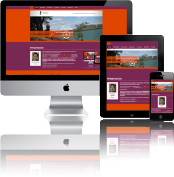

Web, journalisme, photo, audiovisuel et multimédia, voilà les domaines que j'aime et qui m'ont amené à vouloir
en faire un métier.
Dans ce site CV, retrouvez mes différentes formations et compétences. Vous trouverez aussi mon parcours et les
différentes réalisations web que j'ai pu faire.
Je suis actuellement en formation de Concepteur développeur d'applications à l'Afpa de Paris, pour y acquérir les
différentes compétences du développeur permettant de réaliser un site web.
Je suis à la recherche d'un emploi de développeur me permettant de mettre en application toutes ces compétences
acquises et en voies d'acquisition.
Gardez une trace de cette visite et téléchargez mon CV au format pdf.